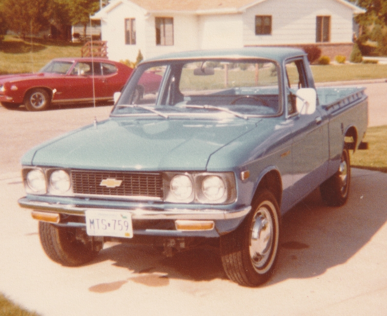
Chevy Luv (formerly Vern's)
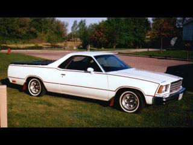
1979 El Camino 4spd
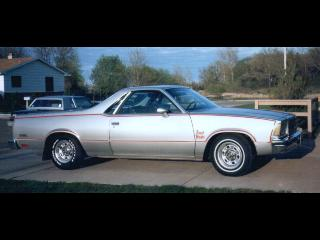
1979 El Camino automatic
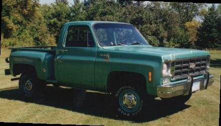
1978 Chev I converted from a long box fleetside
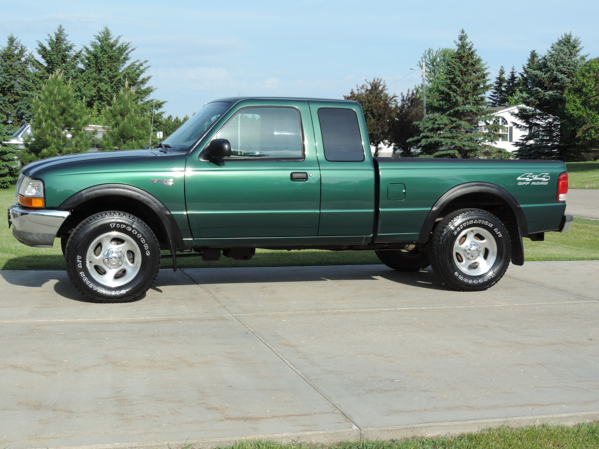
2000 Ranger 4x4
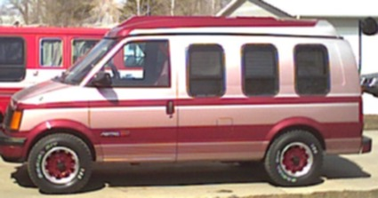
1974 Chevy Astro Conversion van
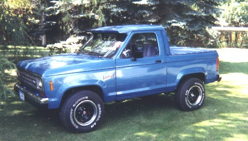
My second BroncoII conversion
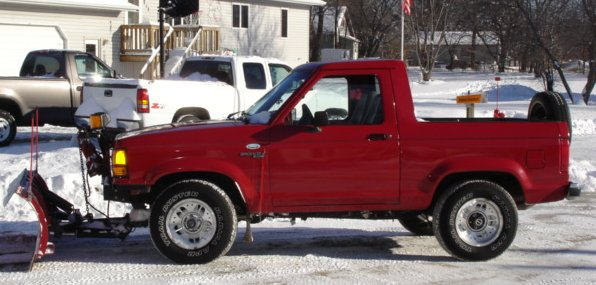
1989 Bronco II converted to a pickup
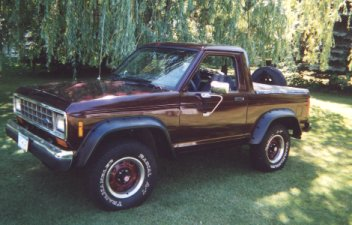
The first Bronco II I converted
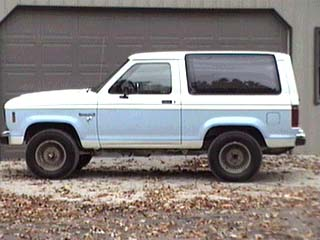
Bronco II I repainted
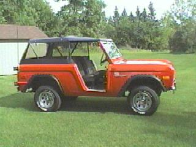
1967 Bronco I converted to a roadster style
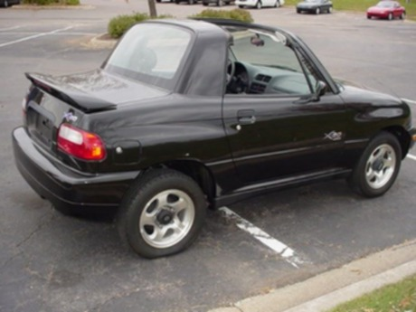
Suzuki X90 4x4 4spd
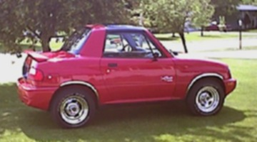
X90 Suzuki 4x4 auto
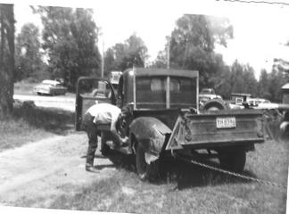
1946 Dodge Pickup
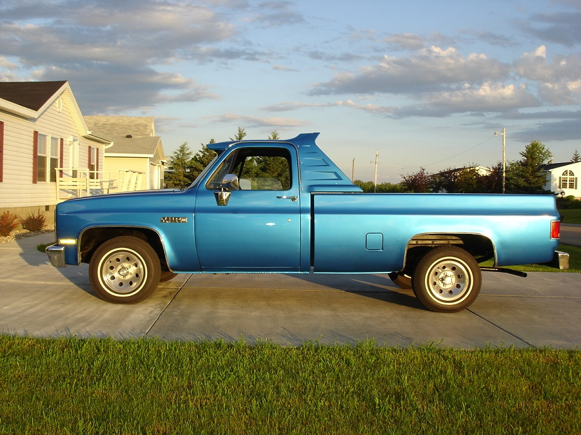
1985 GMC 1/2 ton 2wd 350 auto
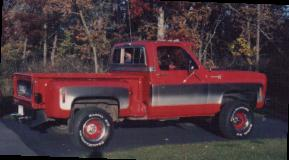
Chevy Stepside 4x4
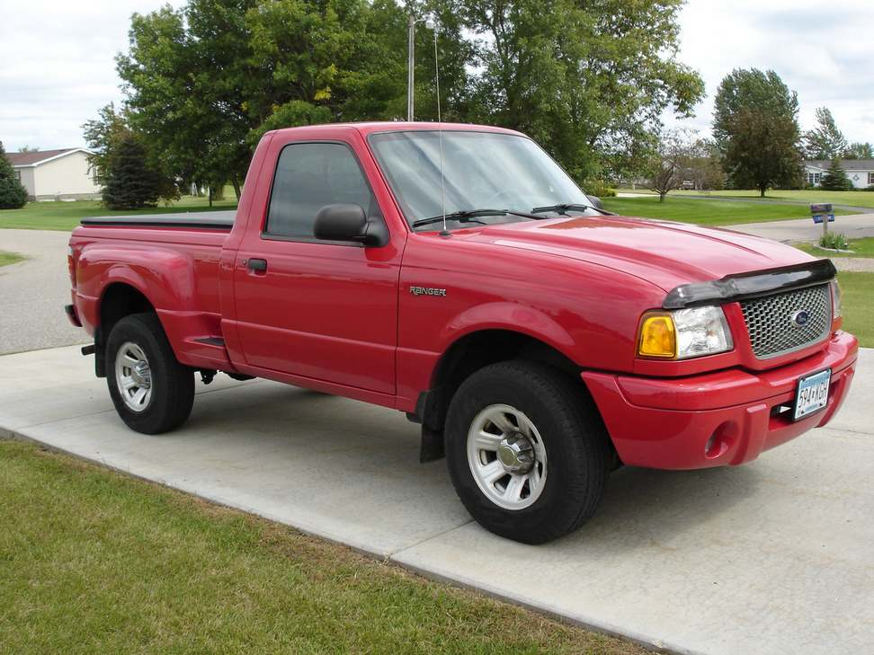
2003 Ford Ranger Edge 2wd auto
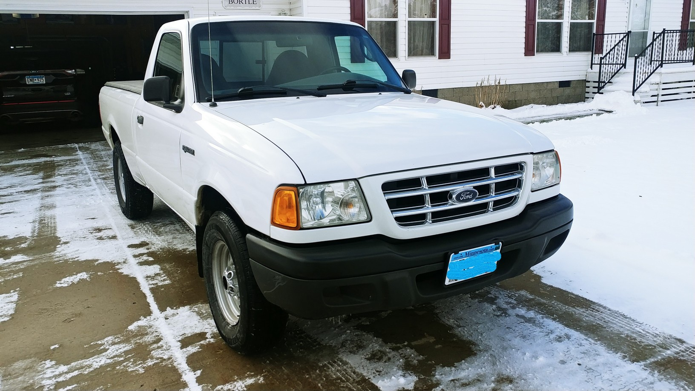
2003 Ford Ranger 2wd
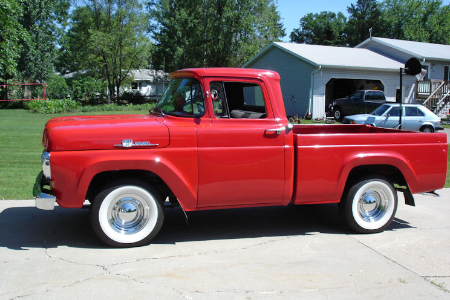
1959 Ford F100 300ci 6cyl auto 2wd